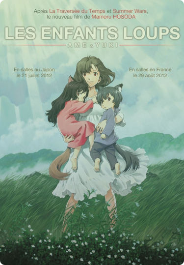
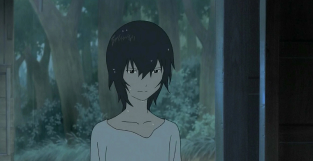

Les enfants loups, c’est un film qui a été réalisé
par Mamoru Hosada en 2012, il s’agit d’un film d’animation
japonaise qui parle de famille et des difficultés à
s’intégré quand l’on est différent. C’est un film qui
à mon sens est triste et qui porte une très belle morale
en tous cas ce que j’en retient c’est
qu’il faut accepter les différences que ce soit les nôtres
et celle des autres.

L'évasion par les films
Je pense que ce film a eu un impact positif sur la personne que je suis maintenant
car j’ai une grande ouverture d’esprit et je me suis souvent sentit différente quand
j’étais petite mais je l’ai toujours accepté même si c’était difficile avec les autres.
Ce film m’a aussi permis de découvrir le monde des films d’animations et des animés qui
font partis intégrant de mon univers actuel, j’espère que dans ma vie future cela soit
toujours le cas car c’est un film important pour moi.
Les films tout comme les livres, la musique nous évade de
ce monde mais pas seulement. Les films participent à notre culture,
ils nous font réfléchir et nous donne de bonne morale, ils nous donnent une autre vision.
Chaque personnage est développé de façon que l’on arrive à ce représenté en eux,
les scènes quand les 3 personnages principaux sont réunis sont marquante et pleine d’émotion,
on a envie d’entrer dans le film et de vivre avec eux.
La représentation dans un des personnages

Le fils cadet Ame dans les enfants loups
L’un des personnages qui m'a le plus marqué est Ame le fils cadet de Yuri.
Il est né comme sa sœur ainé en étant mi-humain, mi-loup.
Contrairement à sa sœur qui souhaite bannir sa part louve de sa vie,
son frère Ame veut vivre comme un loup et ne veut pas faire face aux enfants de son âge.
Quand il prend sa forme humaine, il essaye d’éviter les personnes autres que sa famille,
il est timide et ne parle presque pas, généralement il fuit et va s’enfoncer dans la forêt pour être seul.
C’est au travers de ce personnage que je me représentais le plus quand j’étais petite et même encore maintenant.